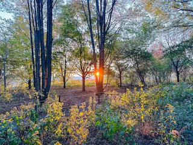
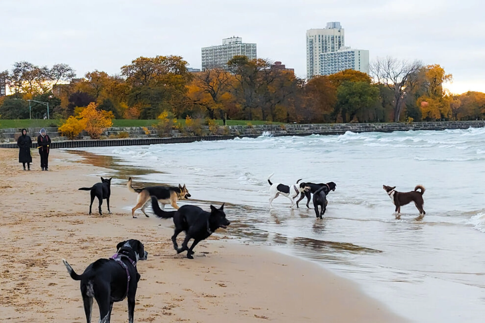
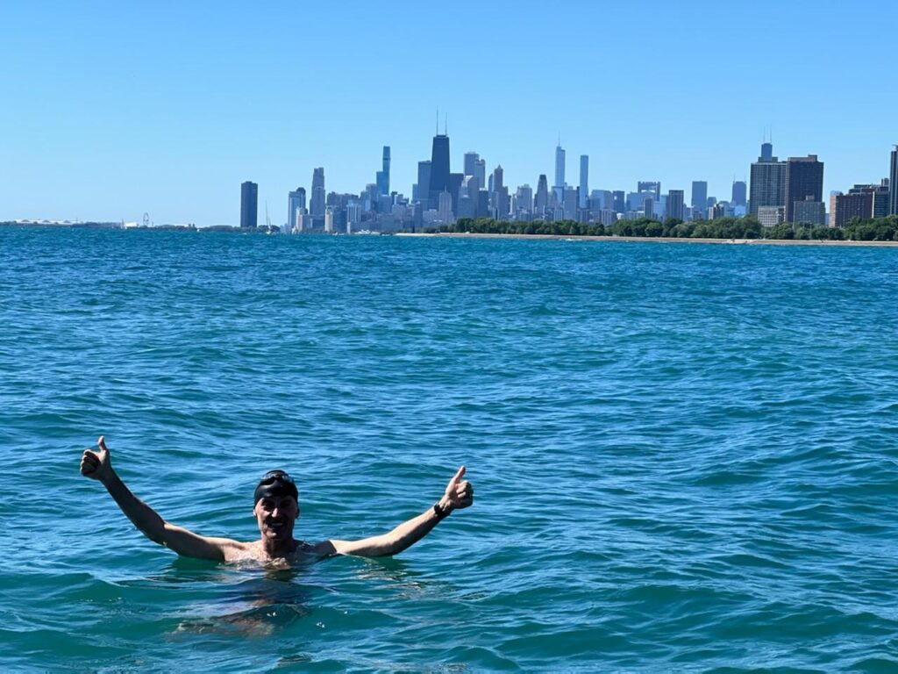
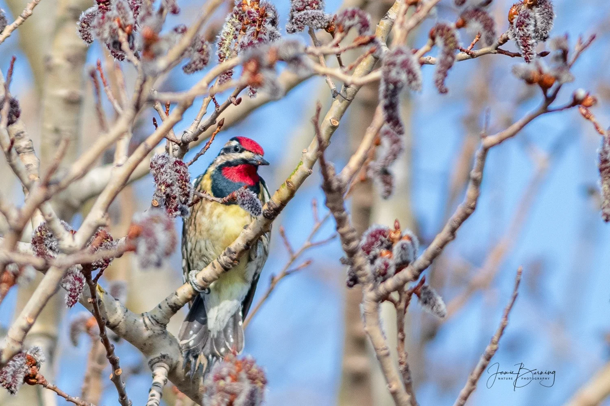

Sights & Sounds of Montrose Beach
Watch: A Look at Montrose Beach

Golden hour light filtering through the trees of Montrose Point Bird Sanctuary — a quiet moment away from the busy beach just steps away.

Dogs playing in the waves at Montrose Dog Beach, one of Chicago's most popular off-leash beaches.

The sandy shoreline of Montrose Beach with the Chicago skyline in the distance.

A songbird spotted at the Magic Hedge during spring migration.